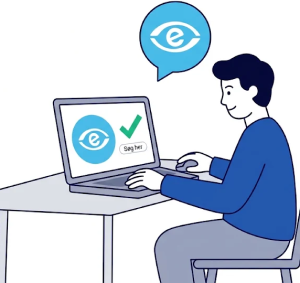
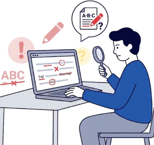

Din guide til sikre køb via hjemmesider
Når du vil undersøge hvorvidt en hjemmeside er sikker at handle med, kan du gøre brug af to troværdige hjælpeværktøjer. Disse værende e-mærket og trustpilot.
Her er 4 steps du kan bruge til, at undersøge hvorvidt en hjemmeside er troværdig.
-
 1
1Tjek trustpilot
Trustpilot er en global platform til kundeanmeldelser, hvor forbrugere kan dele deres oplevelser med en given hjemmeside.
Kopier hjemmesidens webadresse, sæt den ind i trustpilots søge bar og se hvilken score hjemmesiden får og hvad forbrugerne skriver om hjemmesiden.
-

2Tjek e-mærket
E-mærket er Danmarks officielle mærke for sikker e-handel, som garanterer, at en hjemmeside er tryg og lovlig at handle på.
Kopier hjemmesidens webadresse, sæt den ind i e-mærkets søge bar og se hvorvidt hjemmesiden er e-mærket . Hvis den er e-mærket, er den sikker.
-
3
Hængelås og HTTPS
Sørg for, at webadressen er den rigtige og at den starter med https:// (hvor 's' står for sikker). Se også efter et lille hængelås-ikon i adresselinjen. Hvis den er der, betyder det at dine forbindelse til siden er krypteret og sikker.
-

4Se på hjemmesiden
Er priserne for gode til at være sande, er der mange stavefejl, eller ser siden generelt sjusket og uproffesionel ud, så bør det vække en alarmklokke.
En webshop skal oplyse CVR-nummer, adresse og en e-mailadresse eller et telefonnummer, du kan kontakte dem på.